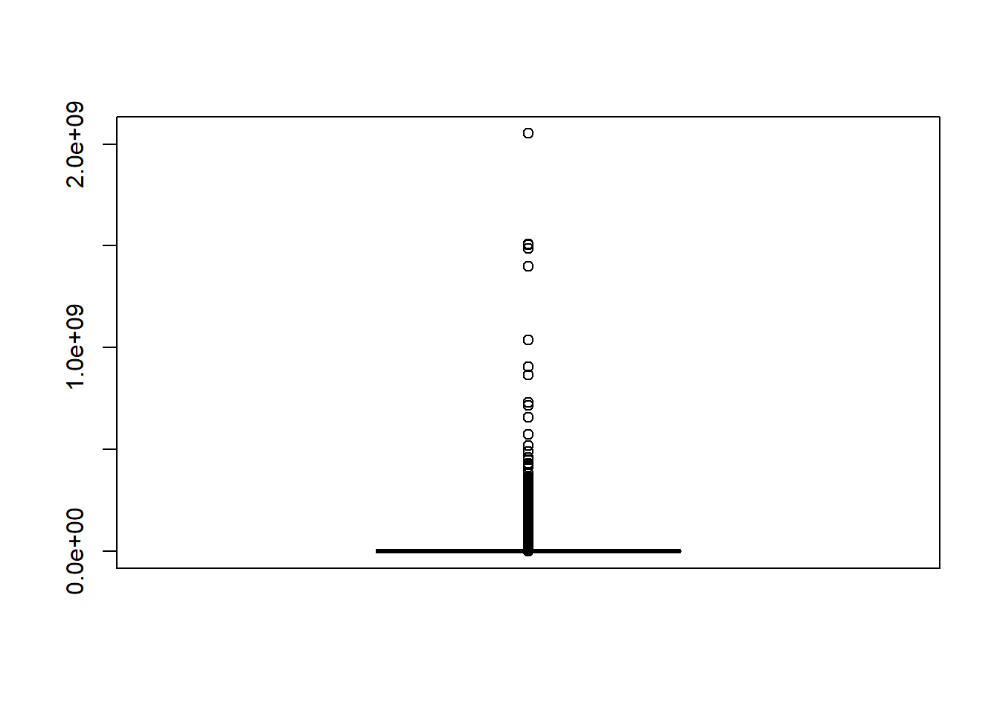
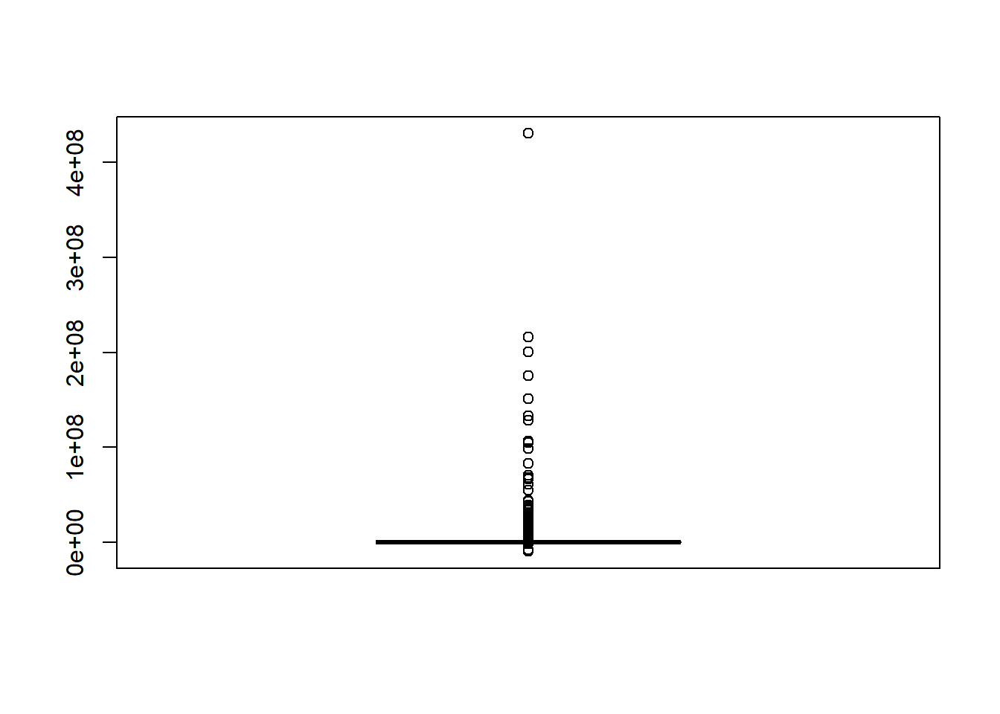

Chapter 12 Plataforma R studio
12.2 Ejemplo 1
▸ Los objetivos de esta actividad son:
Descubrir cómo funciona R studio.
Importar datos.
Realizar análisis estadístico a nivel descriptivo.
Para el desarrollo del presente caso práctico se utilizó la base de datos de la Superintendencia de Compañías, Valores y Seguros (2024), tomando en cuenta la información de los Estados Financieros presentados bajo el estado de compañías activas correspondientes al 2019 (https://appscvsmovil.supercias.gob.ec/ranking/reporte.html)
Primer paso, importar la base con la que vamos a trabajar este caso práctico.
## Warning: package 'readxl' was built under R version 4.4.1## New names:
## • `` -> `...2`
## • `` -> `...3`
## • `` -> `...4`
## • `` -> `...5`
## • `` -> `...6`
## • `` -> `...7`
## • `` -> `...8`
## • `` -> `...9`
## • `` -> `...10`
## • `` -> `...11`
## • `` -> `...12`
## • `` -> `...13`
## • `` -> `...14`
## • `` -> `...15`
## • `` -> `...16`
## • `` -> `...17`
## • `` -> `...18`
## • `` -> `...19`
## • `` -> `...20`
## • `` -> `...21`
## • `` -> `...22`Es importante limpiar la base para poder trabajar correctamente, en este caso debemos eliminar la primera fila.
Para esto es necesario instalar el siguiente paquete:
Por consiguiente, procedemos a eliminar la primera fila, tener en cuenta que en la ruta de la base de datos, se debe cambiar las barras invertidas () por barras inclinadas (/).
datos <- read_excel("C:/Users/francisco.castillo/Desktop/GUIA FINANZAS/Guía_Didática-Finanzas/ranking_2019.xlsx", skip = 1)## New names:
## • `Posición` -> `Posición...1`
## • `Año` -> `Año...2`
## • `Posición` -> `Posición...3`
## • `Año` -> `Año...4`▪ Determine el número de filas, columnas y dimensión.
## [1] 22## [1] 79782## [1] 79782 22▪ Obtén un resumen descriptivo básico de las variables numéricas con la función summary ().
## Fecha de corte - Tue Jun 18 00:04:10 ECT 2024 ...2
## Length:79782 Length:79782
## Class :character Class :character
## Mode :character Mode :character
## ...3 ...4 ...5 ...6
## Length:79782 Length:79782 Length:79782 Length:79782
## Class :character Class :character Class :character Class :character
## Mode :character Mode :character Mode :character Mode :character
## ...7 ...8 ...9 ...10
## Length:79782 Length:79782 Length:79782 Length:79782
## Class :character Class :character Class :character Class :character
## Mode :character Mode :character Mode :character Mode :character
## ...11 ...12 ...13 ...14
## Length:79782 Length:79782 Length:79782 Length:79782
## Class :character Class :character Class :character Class :character
## Mode :character Mode :character Mode :character Mode :character
## ...15 ...16 ...17 ...18
## Length:79782 Length:79782 Length:79782 Length:79782
## Class :character Class :character Class :character Class :character
## Mode :character Mode :character Mode :character Mode :character
## ...19 ...20 ...21 ...22
## Length:79782 Length:79782 Length:79782 Length:79782
## Class :character Class :character Class :character Class :character
## Mode :character Mode :character Mode :character Mode :characterAnálisis descriptivo básico:
▪ Genera tablas de frecuencias absolutas y relativas de las variables categóricas que consideres más importantes.
En este caso se realiza una tabla de frecuencia del sector al que pertenecen las empresas.
##
## MERCADO DE VALORES SOCIETARIO
## 400 79381##
## MERCADO DE VALORES SOCIETARIO
## 0.005013725 0.994986275Asimismo, se realiza tablas respecto al número de empresas de cada provincia.
##
## AZUAY BOLIVAR
## 3819 188
## CAÑAR CARCHI
## 534 295
## CHIMBORAZO COTOPAXI
## 796 916
## EL ORO ESMERALDAS
## 2597 600
## GALAPAGOS GUAYAS
## 479 32365
## IMBABURA LOJA
## 898 1076
## LOS RIOS MANABI
## 1183 3554
## MORONA SANTIAGO NAPO
## 395 247
## ORELLANA PASTAZA
## 521 186
## PICHINCHA SANTA ELENA
## 24855 783
## SANTO DOMINGO DE LOS TSACHILAS SUCUMBIOS
## 953 645
## TUNGURAHUA ZAMORA CHINCHIPE
## 1393 503##
## AZUAY BOLIVAR
## 0.047868540 0.002356451
## CAÑAR CARCHI
## 0.006693323 0.003697622
## CHIMBORAZO COTOPAXI
## 0.009977313 0.011481430
## EL ORO ESMERALDAS
## 0.032551610 0.007520588
## GALAPAGOS GUAYAS
## 0.006003936 0.405673030
## IMBABURA LOJA
## 0.011255813 0.013486920
## LOS RIOS MANABI
## 0.014828092 0.044546947
## MORONA SANTIAGO NAPO
## 0.004951054 0.003095975
## ORELLANA PASTAZA
## 0.006530377 0.002331382
## PICHINCHA SANTA ELENA
## 0.311540342 0.009814367
## SANTO DOMINGO DE LOS TSACHILAS SUCUMBIOS
## 0.011945200 0.008084632
## TUNGURAHUA ZAMORA CHINCHIPE
## 0.017460298 0.006304759▪ Calcula las medidas de tendencia central (media, mediana) para por lo menos dos variables numéricas.
## [1] 1320540## [1] 84148.67## [1] 16920## [1] 46▪ Calcula las medidas de dispersión (rango, varianza, desviación estándar) para cada variable numérica.
## [1] 0 2103828360## [1] 2.649326e+14## [1] 16276749## [1] -43590647 1389319180## [1] 9.287544e+13## [1] 9637190▪ Crea histogramas y diagramas de cajas para visualizar la distribución de las variables numéricas.
Para mejorar la apreciación del histograma
hist(datos$`Activio
2019`,
main = "Histograma Activo 2019",
xlab = "Valor de Activo 2019",
ylab = "Frecuencia",
col = "lightblue")

Análisis de correlación:
▪ Calcula el coeficiente de correlación lineal entre pares de variables numéricas utilizando la función cor().
En este sentido, se analiza el grado de correlación que presenta la utilidad neta en base al ingreso por ventas, donde se obtiene el 44,77%, es decir, el ingreso por ventas explica en esa proporción los cambios que presente la utilidad neta.
## [1] 0.4476654Asimismo, se analiza como el patrimonio de las empresas explica los cambios en la utilidad neta, donde este se obtiene del 54,98%, siendo más alto que el caso anterior, por tanto, el patrimonio explica en mayor media las variaciones de la utilidad neta.
## [1] 0.5498424Modelos de regresión:
▪ Ajusta un modelo de regresión lineal simple entre una variable dependiente y una variable independiente utilizando la función lm().
En efecto, se estimó una regresión lineal simple, donde la variable dependiente es la utilidad neta y la variable independiente es el ingreso por ventas, por tanto, el efecto que presenta es estadísticamente significativo, por ende, a medida que el ingreso por ventas aumenta en una unidad (miles de dólares), la utilidad neta aumenta en 0.059 (miles de dólares).
##
## Call:
## lm(formula = datos$`Utilidad neta\n2019` ~ datos$`Ingreso por ventas\n2019`)
##
## Residuals:
## Min 1Q Median 3Q Max
## -51800428 -11294 -6605 -6605 430573714
##
## Coefficients:
## Estimate Std. Error t value Pr(>|t|)
## (Intercept) 6.605e+03 6.781e+03 0.974 0.33
## datos$`Ingreso por ventas\\n2019` 5.872e-02 4.153e-04 141.404 <2e-16 ***
## ---
## Signif. codes: 0 '***' 0.001 '**' 0.01 '*' 0.05 '.' 0.1 ' ' 1
##
## Residual standard error: 1909000 on 79779 degrees of freedom
## Multiple R-squared: 0.2004, Adjusted R-squared: 0.2004
## F-statistic: 2e+04 on 1 and 79779 DF, p-value: < 2.2e-16Finalmente, se estimó una regresión lineal múltiple, donde la variable dependiente es la utilidad neta y la variable independiente es el ingreso por ventas, y las variables de control: cantidad de empleados e Impuesto a la Renta causado, donde todas las variables incluidas en el modelo son estadísticamente significativas a excepción de la cantidad de empleados. En este sentido, cuando el ingreso por ventas aumenta en una unidad (mil dólares) la utilidad neta aumenta en 0.02 (miles de dólares). Asimismo, cuando el IR causado aumenta en una unidad (miles de dólares) la utilidad neta incrementa en 1.39 (miles de dólares), dado que, una empresa cuando vende más, debe pagar impuestos, y por ende significa que, debido al alto volumen de ventas, obtendrá mayor ganancia. La cantidad de empleados también expresa un aumento en la utilidad neta, lo cual tiene sentido, si la empresa contrato mayor número de trabajadores significa que le va bien y por ende, obtendrá mayor lucro, sin embargo, no es significativo estadísticamente.
reg2<- lm(datos$`Utilidad neta
2019` ~ datos$`Ingreso por ventas
2019`+ datos$`Cant. Empleados`+ datos$`IR causado
2019`)
summary(reg2)##
## Call:
## lm(formula = datos$`Utilidad neta\n2019` ~ datos$`Ingreso por ventas\n2019` +
## datos$`Cant. Empleados` + datos$`IR causado\n2019`)
##
## Residuals:
## Min 1Q Median 3Q Max
## -122151182 -20724 -18949 -18936 430561377
##
## Coefficients:
## Estimate Std. Error t value Pr(>|t|)
## (Intercept) 1.893e+04 6.506e+03 2.910 0.00361 **
## datos$`Ingreso por ventas\\n2019` 2.476e-02 5.702e-04 43.427 < 2e-16 ***
## datos$`Cant. Empleados` 2.396e+00 8.699e+00 0.275 0.78298
## datos$`IR causado\\n2019` 1.391e+00 1.664e-02 83.589 < 2e-16 ***
## ---
## Signif. codes: 0 '***' 0.001 '**' 0.01 '*' 0.05 '.' 0.1 ' ' 1
##
## Residual standard error: 1831000 on 79777 degrees of freedom
## Multiple R-squared: 0.2648, Adjusted R-squared: 0.2648
## F-statistic: 9578 on 3 and 79777 DF, p-value: < 2.2e-1612.3 Ejemplo 2
R for Data Science: Este libro online gratuito ofrece una introducción completa a ggplot2 y dplyr, con tutoriales paso a paso, ejemplos y ejercicios. https://bookdown.org/asmundhreinn/r4ds-master/
plotly: Plotly ofrece una guía completa para crear gráficos con ggplot2, incluyendo ejemplos de gráficos comunes y consejos para mejorar tus visualizaciones. https://plotly.com/ggplot2/getting-started/
tidyverse: El sitio web de tidyverse, la suite de paquetes que incluye ggplot2 y dplyr, ofrece una gran cantidad de recursos para aprender a usar estas herramientas, incluyendo documentación, tutoriales y ejemplos. https://www.tidyverse.org/
R-bloggers: R-bloggers es un sitio web que publica artículos sobre una variedad de temas relacionados con R, incluyendo ggplot2 y dplyr. Puedes encontrar muchos tutoriales y ejemplos útiles en este sitio. https://www.r-bloggers.com/2015/12/how-to-learn-r-2/
Consejos:
Comienza con lo básico: No trates de aprender todo sobre ggplot2 y dplyr a la vez. Comienza con lo básico y ve avanzando gradualmente a medida que te sientas más cómodo.
Practica lo que aprendes: La mejor manera de aprender ggplot2 y dplyr es practicando. Busca conjuntos de datos y crea gráficos para visualizarlos.
No tengas miedo de pedir ayuda: Si te encuentras con un problema, no dudes en pedir ayuda. Hay muchos recursos disponibles
Primero debemos instalar los siguientes paquetes:
install.packages(“ggplot2”) install.packages(“readxl”) install.packages(“tidyr”) install.packages(“dplyr”)
Una vez instalada debemos indicar a R que deseamos usarla, para ello basta con la instrucción.
library(ggplot2) library(readxl) library(tidyr) library(dplyr)
#Una vez instalada debemos indicar a R que deseamos usarla, para ello basta con la instrucción.
library(ggplot2)
library(readxl)
library(tidyr)
library(dplyr)##
## Adjuntando el paquete: 'dplyr'## The following objects are masked from 'package:stats':
##
## filter, lag## The following objects are masked from 'package:base':
##
## intersect, setdiff, setequal, union
Podemos mejorar la aparencia, de la siguiente manera:
ggplot(datos) +
geom_point(mapping = aes(x = datos$`Ingreso Total
2019`,
y = datos$`Tipo Compañia`),
color = "#22577a") + # Cambia "blue" por el color que desees
labs(title = "Gráfico de Dispersión",
x = "Ingreso Total",
y = "Tipo Compañia")Podemos quitar el fondo:
ggplot(datos) +
geom_point(mapping = aes(x = datos$`Ingreso Total
2019`,
y = datos$`Tipo Compañia`),
color = "#22577a") +
labs(title = "Gráfico de Dispersión",
x = "Ingreso Total",
y = "Tipo Compañia") +
theme(panel.background = element_blank(), # Quita el fondo del panel
panel.grid = element_blank(), # Quita las líneas de la cuadrícula
plot.background = element_blank()) # Quita el fondo del gráfico La Figura muestra que el tipo de empresa con mayores ingresos totales es la “Anónima”, seguido de la “Sucursal extranjera”, la “sociedad por acciones simplificada” y la “responsabilidad limitada”. Los tipos de empresa con menores ingresos totales son la “asociación o consorcio”, la “anónima en predios rústicos” y la “comandita por acciones”.
Los datos del gráfico pueden ser interpretados de diversas maneras. Una posible interpretación es que las empresas anónimas son las más rentables, seguidas de las sucursales extranjeras, las sociedades por acciones simplificadas y las sociedades de responsabilidad limitada. Es decir, las empresas anónimas son las que tienen mayor presencia en el mercado. Esta información puede ser útil para inversores, empresarios y otros interesados en el sector empresarial.
ggplot(datos) +
geom_point(mapping = aes(x =datos$`Ingreso Total
2019`, y =datos$`Tipo Compañia`, color=datos$Tamaño
))Para quitar las observaciones NA
Ahora, volvemos a graficar y mejoramos la apariencia:
ggplot(datos_limpios) +
geom_point(mapping = aes(x = datos_limpios$`Ingreso Total
2019`,
y = datos_limpios$`Tipo Compañia`,
color = datos_limpios$Tamaño)) + # Usar directamente las columnas
labs(title = "Gráfico de Dispersión",
x = "Ingreso Total 2019 (en miles)", # Cambia este texto al que desees
y = "Tipo de Compañía", # Cambia este texto al que desees
color = "Tamaño de Compañía") + # Cambia el nombre de la leyenda
theme(panel.background = element_blank())ggplot(datos_limpios)+
stat_summary(
mapping = aes(x=datos_limpios$Sector, y=datos_limpios$`Ingreso Total
2019`),
fun.min=min,
fun.max=max,
fun=median
)Mejoramos la imagen
ggplot(datos_limpios) +
stat_summary(
mapping = aes(x = datos_limpios$Sector, y = datos_limpios$`Ingreso Total
2019`), # Especifica la variable en y
fun.min = min,
fun.max = max,
fun = median
) +
labs(title = "Ingreso total por sector", # Cambia este texto al que desees
x = "Sector", # Cambia este texto al que desees
y = "Ingreso Total") + # Cambia este texto al que desees
theme(panel.background = element_blank())
Centramos el título
ggplot(datos_limpios) +
stat_summary(
mapping = aes(x = datos_limpios$Sector, y = datos_limpios$`Ingreso Total
2019`), # Especifica la variable en y
fun.min = min,
fun.max = max,
fun = median
) +
labs(title = "Ingreso total por sector", # Cambia este texto al que desees
x = "Sector", # Cambia este texto al que desees
y = "Ingreso Total") + # Cambia este texto al que desees
theme(
panel.background = element_blank(),
plot.title = element_text(hjust = 0.5) # Centra el título
)Mejoramos la imagen
ggplot(datos_limpios) +
geom_bar(mapping = aes(x = Sector, fill = Sector), color = "black") + # Bordes de las barras
scale_fill_manual(values = c("#64a6bd", "#cfbaf0")) + # Especificar los colores manualmente
labs(title = "Distribución de Sectores", # Título del gráfico
x = "Sector", # Etiqueta del eje X
y = "Número de Observaciones") + # Etiqueta del eje Y
theme_minimal() + # Tema minimalista
theme(
panel.background = element_blank(), # Quitar fondo del panel
plot.title = element_text(hjust = 0.5), # Centrar el título
axis.text.x = element_text(angle = 45, hjust = 1) # Rotar etiquetas del eje X
)Se percibe las observaciones correspondientes a las empresas que integran el sector societario y mercado de valores, donde claramente se observa que en su gran mayoría las empresas se dedican al sector societario y en mínima parte al mercado de valores.

Mejoramos la apariencia:
ggplot(datos_limpios) +
geom_bar(mapping = aes(x = Sector, fill = Región), color = NA) + # Sin bordes
labs(title = "Distribución de Sectores por Región", # Título del gráfico
x = "Sector", # Etiqueta del eje X
y = "Número de Observaciones") + # Etiqueta del eje Y
scale_fill_manual(values = c("#f1c0e8", "#e7c6ff", "#77bfa3", "#95b8d1")) + # Colores personalizados
theme_minimal() + # Tema minimalista
theme(
panel.background = element_blank(), # Quitar fondo del panel
plot.title = element_text(hjust = 0.5, size = 16), # Centrar y aumentar tamaño del título
axis.text.x = element_text(angle = 360, hjust = 1), # Rotar etiquetas del eje X
legend.title = element_blank() # Quitar título de la leyenda
)datos_resumen <- datos_limpios %>%
count(Región) %>% # Contar el número de observaciones por región
mutate(porcentaje = n / sum(n) * 100) # Calcular porcentaje
ggplot(datos_resumen, aes(x = "", y = porcentaje, fill = Región)) +
geom_bar(stat = "identity", color = "white") + # Bordes blancos para el pastel
coord_polar("y", start = 0) + # Convertir a gráfico de pastel
labs(title = "Distribución de Regiones", # Título del gráfico
x = NULL, # Sin etiqueta en el eje X
y = NULL) + # Sin etiqueta en el eje Y
scale_fill_manual(values = c("#f1c0e8", "#e7c6ff", "#77bfa3", "#bde0fe")) + # Colores personalizados
theme_void() + # Tema sin ejes
theme(
plot.title = element_text(hjust = 0.5, size = 16) # Centrar y aumentar tamaño del título
)Podemos añdir el porcentaje de la distribución.
datos_resumen <- datos_limpios %>%
count(Región) %>% # Contar el número de observaciones por región
mutate(porcentaje = n / sum(n) * 100) # Calcular porcentaje
# Gráfico de pastel
ggplot(datos_resumen, aes(x = "", y = porcentaje, fill = Región)) +
geom_bar(stat = "identity", color = "white") + # Bordes blancos para el pastel
coord_polar("y", start = 0) + # Convertir a gráfico de pastel
labs(title = "Distribución de empresas por Regiones", # Título del gráfico
x = NULL, # Sin etiqueta en el eje X
y = NULL) + # Sin etiqueta en el eje Y
scale_fill_manual(values = c("#f1c0e8", "#e7c6ff", "#77bfa3", "#bde0fe")) + # Colores personalizados
theme_void() + # Tema sin ejes
theme(
plot.title = element_text(hjust = 0.5, size = 16) # Centrar y aumentar tamaño del título
) +
geom_text(aes(label = paste0(round(porcentaje, 1), "%")), # Etiquetas con porcentajes
position = position_stack(vjust = 0.5), # Centrar las etiquetas en el pastel
color = "white") # Color del texto de las etiquetasPodemos poner color a los bordes de la distribución y el color del porcentaje en negro:
datos_resumen <- datos_limpios %>%
count(Región) %>% # Contar el número de observaciones por región
mutate(porcentaje = n / sum(n) * 100) # Calcular porcentaje
# Gráfico de pastel
ggplot(datos_resumen, aes(x = "", y = porcentaje, fill = Región)) +
geom_bar(stat = "identity", color = "black") + # Bordes de color gris claro
coord_polar("y", start = 0) + # Convertir a gráfico de pastel
labs(title = "Distribución de empresas por Regiones", # Título del gráfico
x = NULL, # Sin etiqueta en el eje X
y = NULL) + # Sin etiqueta en el eje Y
scale_fill_manual(values = c("#f1c0e8", "#e7c6ff", "#77bfa3", "#bde0fe")) + # Colores personalizados
theme_void() + # Tema sin ejes
theme(
plot.title = element_text(hjust = 0.5, size = 16) # Centrar y aumentar tamaño del título
) +
geom_text(aes(label = paste0(round(porcentaje, 1), "%")), # Etiquetas con porcentajes
position = position_stack(vjust = 0.5), # Centrar las etiquetas en el pastel
color = "black") # Color del texto de las etiquetas en negroggplot(datos_limpios, aes(x = datos_limpios$`Ingreso Total
2019`, y = datos_limpios$`Patrimonio
2019`, color = datos_limpios$Sector)) +
geom_point() +
facet_wrap(~Sector) + # Dividir el gráfico por sector
labs(
title = "Ingreso total por sector",
x = "Ingreso total",
y = "Patrimonio"
) +
theme_minimal()Mejoramos la apariencia:
Mejoras realizadas:
Tamaño y forma de los puntos: Aumenté el tamaño de los puntos y ajusté la forma y el borde para hacerlos más visibles.
Transparencia: Añadimos un poco de transparencia (alpha) para mejorar la visibilidad en áreas con muchos puntos.
Títulos y etiquetas: Ajustamos el título para que sea más claro y lo centré. También se añadieron unidades en los ejes.
Tema: Usamos theme_minimal(base_size = 14) para un tamaño de texto más legible y mejoré la cuadrícula.
Paleta de colores: Utilizamos scale_color_brewer(palette = “Set1”) para aplicar una paleta de colores atractiva y diferenciada.
colores_personalizados <- c("#9f86c0", "#184e77")
ggplot(datos_limpios, aes(x = `Ingreso Total\n2019`, y = `Patrimonio\n2019`, color = Sector)) +
geom_point(size = 3, alpha = 0.7, shape = 21, stroke = 1.5) + # Aumentar tamaño y transparencia de los puntos
facet_wrap(~Sector) + # Dividir el gráfico por sector
labs(
title = "Ingreso Total vs. Patrimonio por Sector",
x = "Ingreso Total (2019)",
y = "Patrimonio (2019)"
) +
theme_minimal(base_size = 14) + # Tema minimalista con tamaño base ajustado
theme(
plot.title = element_text(hjust = 0.5, size = 18, face = "bold"), # Centrar y resaltar el título
legend.position = "bottom", # Colocar la leyenda en la parte inferior
legend.title = element_blank(), # Quitar título de la leyenda
panel.grid.major = element_line(color = "gray85"), # Colores de las líneas de la cuadrícula
panel.grid.minor = element_blank() # Quitar líneas de cuadrícula menores
) +
scale_color_manual(values = colores_personalizados) # Usar colores personalizados##Ejemplo 3 Los datos obtenidos para el desarrollo del presente caso práctico se han extraído del World Development Indicators (WDI) del Banco Mundial (2024) con la temporalidad de 1970 – 2022, para las variables de exportaciones, importaciones, formación bruta de capital fijo y renta de recursos naturales de Ecuador, mismos datos se encuentran expresados en porcentaje del PIB.
Primero, importamos la base de datos, llamada “ecuador”
A continuación, se grafica la evolución de cada una de las variables en la Figura 1. se evidencia el patrón que siguen las exportaciones ecuatorianas, donde se observa una tendencia ascendente con unas pequeñas caídas en los últimos años debido a la crisis sanitaria.
Extraemos el promedio de las exportaciones
R no sabe que las exportaciones son una serie temporal, si quisiéramos que lo dibujase como serie temporal, le agregamos ts
Le damos formato de serie temporal

Con la finalidad de obtener la predicción de las variables, se debe instalar:
install.packages(“forecast”) library(forecast)
Con este paquete, puedo hacer una predicción, gracias al comando auto.arima
La predicción con autoarima requiere básicamente, dos pasos:
1 paso: creamos el modelo ARIMA para las exportaciones
2 paso: ahora ya podemos hacer una predicción de las exportaciones
## Registered S3 method overwritten by 'quantmod':
## method from
## as.zoo.data.frame zooDibujamos la predicciÓn
Se pueden extraer los datos de la línea azul (que son los de la predicción)
## Time Series:
## Start = 2024
## End = 2035
## Frequency = 1
## [1] 29.06537 29.06537 29.06537 29.06537 29.06537 29.06537 29.06537 29.06537
## [9] 29.06537 29.06537 29.06537 29.06537Podemos ver la predicción total
Podemos obtener la correlación entre variables:
## [1] 0.74821912.4 Ejemplo con minería de texto
Vamos a procesar un archivo de texto
Lo primero que tenemos que hacer, es importar el archivo de texto a R
El comando para importar texto en r, es readLines
## [1] "Sin duda alguna, la relación entre la deuda pública y la renta de recursos naturales es un tema de creciente relevancia en la economía global. En muchos países, la explotación de recursos naturales no solo constituye una importante fuente de ingresos, sino que también puede influir de manera significativa en la dinámica de la deuda pública. Por lo tanto, esta investigación tiene como objetivo examinar la relación entre la renta de recursos naturales y la deuda pública a nivel global y en diferentes grupos de países, clasificados por nivel de ingresos, durante el periodo 1995 – 2022. En efecto, se utilizó técnicas econométricas de segunda generación que controlan la dependencia transversal entre los países examinados, donde se encontró que existe dependencia y cointegración a largo plazo en las variables del modelo. Asimismo, mediante regresiones cuantílicas, se encontró que, la renta de recursos naturales y el crecimiento económico disminuyen la deuda pública; mientras que, la tecnología y el desempleo incrementan la deuda pública, y únicamente la desigualdad presenta efectos heterogéneos en los grupos de países, en los países desarrollados reduce la deuda pública, y en los países en desarrollo aumenta la deuda pública. Finalmente, este estudio permite formular varias implicaciones de política para lograr una deuda pública equilibrada, subrayando la importancia de una administración eficiente de los ingresos provenientes de los recursos naturales y una inversión estratégica en sectores que promuevan el crecimiento económico sostenible. "Vamos a guardar el texto que está en txt en R y lo llamamos “Estrategia”
Recordemos, que lo único que hemos hecho es guardar el txt en R, dado que, R no sabe que discurso es un archivo de texto, simplemente lo ha incorporado, tenemos que decirle a R, que “Estrategia” es un archivo de texto para el tratamiento de texto, podemos usar la librería “tm” (textmining).
Por consiguiente, debemos instalar:
install.packages(“tm”) library(tm)
Primer paso, vamos a darle formato de texto(que entienda R) a “Estrategia” al archivo nuevo lo vamos a llamar “documento”
## Cargando paquete requerido: NLP##
## Adjuntando el paquete: 'NLP'## The following object is masked from 'package:ggplot2':
##
## annotatePodemos ver, que el nuevo archivo “documento” está en Data (ya r sabe que son datos, de texto, pero datos).
## <<SimpleCorpus>>
## Metadata: corpus specific: 1, document level (indexed): 0
## Content: documents: 1
##
## [1] Sin duda alguna, la relación entre la deuda pública y la renta de recursos naturales es un tema de creciente relevancia en la economía global. En muchos países, la explotación de recursos naturales no solo constituye una importante fuente de ingresos, sino que también puede influir de manera significativa en la dinámica de la deuda pública. Por lo tanto, esta investigación tiene como objetivo examinar la relación entre la renta de recursos naturales y la deuda pública a nivel global y en diferentes grupos de países, clasificados por nivel de ingresos, durante el periodo 1995 – 2022. En efecto, se utilizó técnicas econométricas de segunda generación que controlan la dependencia transversal entre los países examinados, donde se encontró que existe dependencia y cointegración a largo plazo en las variables del modelo. Asimismo, mediante regresiones cuantílicas, se encontró que, la renta de recursos naturales y el crecimiento económico disminuyen la deuda pública; mientras que, la tecnología y el desempleo incrementan la deuda pública, y únicamente la desigualdad presenta efectos heterogéneos en los grupos de países, en los países desarrollados reduce la deuda pública, y en los países en desarrollo aumenta la deuda pública. Finalmente, este estudio permite formular varias implicaciones de política para lograr una deuda pública equilibrada, subrayando la importancia de una administración eficiente de los ingresos provenientes de los recursos naturales y una inversión estratégica en sectores que promuevan el crecimiento económico sostenible.Ahora ya podemos empezar a trabajar con el documento, y en primer lugar, tenemos que limpiarlo, para limpiar el texto, tenemos que quitar mayúsculas, acrónimos, puntuaciones, comas, puntos, exclamaciones, etc. Podemos empezar, quitando las mayúsculas, por tanto, como vamos a limpiar el documento, creamos un nuevo documento llamado documentolimpio.
## <<SimpleCorpus>>
## Metadata: corpus specific: 1, document level (indexed): 0
## Content: documents: 1
##
## [1] sin duda alguna, la relación entre la deuda pública y la renta de recursos naturales es un tema de creciente relevancia en la economía global. en muchos países, la explotación de recursos naturales no solo constituye una importante fuente de ingresos, sino que también puede influir de manera significativa en la dinámica de la deuda pública. por lo tanto, esta investigación tiene como objetivo examinar la relación entre la renta de recursos naturales y la deuda pública a nivel global y en diferentes grupos de países, clasificados por nivel de ingresos, durante el periodo 1995 – 2022. en efecto, se utilizó técnicas econométricas de segunda generación que controlan la dependencia transversal entre los países examinados, donde se encontró que existe dependencia y cointegración a largo plazo en las variables del modelo. asimismo, mediante regresiones cuantílicas, se encontró que, la renta de recursos naturales y el crecimiento económico disminuyen la deuda pública; mientras que, la tecnología y el desempleo incrementan la deuda pública, y únicamente la desigualdad presenta efectos heterogéneos en los grupos de países, en los países desarrollados reduce la deuda pública, y en los países en desarrollo aumenta la deuda pública. finalmente, este estudio permite formular varias implicaciones de política para lograr una deuda pública equilibrada, subrayando la importancia de una administración eficiente de los ingresos provenientes de los recursos naturales y una inversión estratégica en sectores que promuevan el crecimiento económico sostenible.Como podemos observar, hemos quitado las mayúsculas, el siguiente paso, puede ser eliminar, las comas, puntos, exclamaciones, etc.
## <<SimpleCorpus>>
## Metadata: corpus specific: 1, document level (indexed): 0
## Content: documents: 1
##
## [1] sin duda alguna la relación entre la deuda pública y la renta de recursos naturales es un tema de creciente relevancia en la economía global en muchos países la explotación de recursos naturales no solo constituye una importante fuente de ingresos sino que también puede influir de manera significativa en la dinámica de la deuda pública por lo tanto esta investigación tiene como objetivo examinar la relación entre la renta de recursos naturales y la deuda pública a nivel global y en diferentes grupos de países clasificados por nivel de ingresos durante el periodo 1995 – 2022 en efecto se utilizó técnicas econométricas de segunda generación que controlan la dependencia transversal entre los países examinados donde se encontró que existe dependencia y cointegración a largo plazo en las variables del modelo asimismo mediante regresiones cuantílicas se encontró que la renta de recursos naturales y el crecimiento económico disminuyen la deuda pública mientras que la tecnología y el desempleo incrementan la deuda pública y únicamente la desigualdad presenta efectos heterogéneos en los grupos de países en los países desarrollados reduce la deuda pública y en los países en desarrollo aumenta la deuda pública finalmente este estudio permite formular varias implicaciones de política para lograr una deuda pública equilibrada subrayando la importancia de una administración eficiente de los ingresos provenientes de los recursos naturales y una inversión estratégica en sectores que promuevan el crecimiento económico sostenibleRecordemos, que el objetivo inicial, es extraer información del texto, hay muchas palabras que no aportan información, tipo preposiciones, adverbios, determinantes, etc
## [1] "de" "la" "que" "el" "en"
## [6] "y" "a" "los" "del" "se"
## [11] "las" "por" "un" "para" "con"
## [16] "no" "una" "su" "al" "lo"
## [21] "como" "más" "pero" "sus" "le"
## [26] "ya" "o" "este" "sí" "porque"
## [31] "esta" "entre" "cuando" "muy" "sin"
## [36] "sobre" "también" "me" "hasta" "hay"
## [41] "donde" "quien" "desde" "todo" "nos"
## [46] "durante" "todos" "uno" "les" "ni"
## [51] "contra" "otros" "ese" "eso" "ante"
## [56] "ellos" "e" "esto" "mí" "antes"
## [61] "algunos" "qué" "unos" "yo" "otro"
## [66] "otras" "otra" "él" "tanto" "esa"
## [71] "estos" "mucho" "quienes" "nada" "muchos"
## [76] "cual" "poco" "ella" "estar" "estas"
## [81] "algunas" "algo" "nosotros" "mi" "mis"
## [86] "tú" "te" "ti" "tu" "tus"
## [91] "ellas" "nosotras" "vosotros" "vosotras" "os"
## [96] "mío" "mía" "míos" "mías" "tuyo"
## [101] "tuya" "tuyos" "tuyas" "suyo" "suya"
## [106] "suyos" "suyas" "nuestro" "nuestra" "nuestros"
## [111] "nuestras" "vuestro" "vuestra" "vuestros" "vuestras"
## [116] "esos" "esas" "estoy" "estás" "está"
## [121] "estamos" "estáis" "están" "esté" "estés"
## [126] "estemos" "estéis" "estén" "estaré" "estarás"
## [131] "estará" "estaremos" "estaréis" "estarán" "estaría"
## [136] "estarías" "estaríamos" "estaríais" "estarían" "estaba"
## [141] "estabas" "estábamos" "estabais" "estaban" "estuve"
## [146] "estuviste" "estuvo" "estuvimos" "estuvisteis" "estuvieron"
## [151] "estuviera" "estuvieras" "estuviéramos" "estuvierais" "estuvieran"
## [156] "estuviese" "estuvieses" "estuviésemos" "estuvieseis" "estuviesen"
## [161] "estando" "estado" "estada" "estados" "estadas"
## [166] "estad" "he" "has" "ha" "hemos"
## [171] "habéis" "han" "haya" "hayas" "hayamos"
## [176] "hayáis" "hayan" "habré" "habrás" "habrá"
## [181] "habremos" "habréis" "habrán" "habría" "habrías"
## [186] "habríamos" "habríais" "habrían" "había" "habías"
## [191] "habíamos" "habíais" "habían" "hube" "hubiste"
## [196] "hubo" "hubimos" "hubisteis" "hubieron" "hubiera"
## [201] "hubieras" "hubiéramos" "hubierais" "hubieran" "hubiese"
## [206] "hubieses" "hubiésemos" "hubieseis" "hubiesen" "habiendo"
## [211] "habido" "habida" "habidos" "habidas" "soy"
## [216] "eres" "es" "somos" "sois" "son"
## [221] "sea" "seas" "seamos" "seáis" "sean"
## [226] "seré" "serás" "será" "seremos" "seréis"
## [231] "serán" "sería" "serías" "seríamos" "seríais"
## [236] "serían" "era" "eras" "éramos" "erais"
## [241] "eran" "fui" "fuiste" "fue" "fuimos"
## [246] "fuisteis" "fueron" "fuera" "fueras" "fuéramos"
## [251] "fuerais" "fueran" "fuese" "fueses" "fuésemos"
## [256] "fueseis" "fuesen" "siendo" "sido" "tengo"
## [261] "tienes" "tiene" "tenemos" "tenéis" "tienen"
## [266] "tenga" "tengas" "tengamos" "tengáis" "tengan"
## [271] "tendré" "tendrás" "tendrá" "tendremos" "tendréis"
## [276] "tendrán" "tendría" "tendrías" "tendríamos" "tendríais"
## [281] "tendrían" "tenía" "tenías" "teníamos" "teníais"
## [286] "tenían" "tuve" "tuviste" "tuvo" "tuvimos"
## [291] "tuvisteis" "tuvieron" "tuviera" "tuvieras" "tuviéramos"
## [296] "tuvierais" "tuvieran" "tuviese" "tuvieses" "tuviésemos"
## [301] "tuvieseis" "tuviesen" "teniendo" "tenido" "tenida"
## [306] "tenidos" "tenidas" "tened"documentolimpio <- tm_map(documentolimpio, removeWords, stopwords("spanish"))
inspect(documentolimpio)## <<SimpleCorpus>>
## Metadata: corpus specific: 1, document level (indexed): 0
## Content: documents: 1
##
## [1] duda alguna relación deuda pública renta recursos naturales tema creciente relevancia economía global países explotación recursos naturales solo constituye importante fuente ingresos sino puede influir manera significativa dinámica deuda pública investigación objetivo examinar relación renta recursos naturales deuda pública nivel global diferentes grupos países clasificados nivel ingresos periodo 1995 – 2022 efecto utilizó técnicas econométricas segunda generación controlan dependencia transversal países examinados encontró existe dependencia cointegración largo plazo variables modelo asimismo mediante regresiones cuantílicas encontró renta recursos naturales crecimiento económico disminuyen deuda pública mientras tecnología desempleo incrementan deuda pública únicamente desigualdad presenta efectos heterogéneos grupos países países desarrollados reduce deuda pública países desarrollo aumenta deuda pública finalmente estudio permite formular varias implicaciones política lograr deuda pública equilibrada subrayando importancia administración eficiente ingresos provenientes recursos naturales inversión estratégica sectores promuevan crecimiento económico sostenibleComo se puede observar, existen huecos entre palabras, son las palabras que hemos quitado (stopwords). El problema, es que, los huecos son distintos entre las palabras, r “no lo entiende muy bien”, podemos ayudarle a r, dejando el mismo hueco entre palabras.
## <<SimpleCorpus>>
## Metadata: corpus specific: 1, document level (indexed): 0
## Content: documents: 1
##
## [1] duda alguna relación deuda pública renta recursos naturales tema creciente relevancia economía global países explotación recursos naturales solo constituye importante fuente ingresos sino puede influir manera significativa dinámica deuda pública investigación objetivo examinar relación renta recursos naturales deuda pública nivel global diferentes grupos países clasificados nivel ingresos periodo 1995 – 2022 efecto utilizó técnicas econométricas segunda generación controlan dependencia transversal países examinados encontró existe dependencia cointegración largo plazo variables modelo asimismo mediante regresiones cuantílicas encontró renta recursos naturales crecimiento económico disminuyen deuda pública mientras tecnología desempleo incrementan deuda pública únicamente desigualdad presenta efectos heterogéneos grupos países países desarrollados reduce deuda pública países desarrollo aumenta deuda pública finalmente estudio permite formular varias implicaciones política lograr deuda pública equilibrada subrayando importancia administración eficiente ingresos provenientes recursos naturales inversión estratégica sectores promuevan crecimiento económico sostenibleComo podemos observar, ya existe solo un hueco entre palabras, una vez que tenemos el texto limpio, ya podemos hacernos preguntas.
Una pregunta, podría ser cuales son las palabras que más se repiten a “documentolimpio” le damos un formato que R pueda trabajar con el como hemos dicho que estamos interesados en ver las palabras más repetidas, creamos una archivo llamado “palabras”.
Ahora ya puedo hacer preguntas, como cuales son las palabras más repetidas
## [1] "1995" "2022" "administración" "alguna"
## [5] "asimismo" "aumenta" "clasificados" "cointegración"
## [9] "constituye" "controlan" "creciente" "crecimiento"
## [13] "cuantílicas" "dependencia" "desarrollados" "desarrollo"
## [17] "desempleo" "desigualdad" "deuda" "diferentes"
## [21] "dinámica" "disminuyen" "duda" "econométricas"
## [25] "economía" "económico" "efecto" "efectos"
## [29] "eficiente" "encontró" "equilibrada" "estratégica"
## [33] "estudio" "examinados" "examinar" "existe"
## [37] "explotación" "finalmente" "formular" "fuente"
## [41] "generación" "global" "grupos" "heterogéneos"
## [45] "implicaciones" "importancia" "importante" "incrementan"
## [49] "influir" "ingresos" "inversión" "investigación"
## [53] "largo" "lograr" "manera" "mediante"
## [57] "mientras" "modelo" "naturales" "nivel"
## [61] "objetivo" "países" "periodo" "permite"
## [65] "plazo" "política" "presenta" "promuevan"
## [69] "provenientes" "puede" "pública" "recursos"
## [73] "reduce" "regresiones" "relación" "relevancia"
## [77] "renta" "sectores" "segunda" "significativa"
## [81] "sino" "solo" "sostenible" "subrayando"
## [85] "tecnología" "tema" "transversal" "técnicas"
## [89] "utilizó" "variables" "varias" "únicamente"
## [93] "–"## character(0)## character(0)Si quisiéramos quitar una palabra en concreto
Esta información que hemos obtenido, la podemos mostrar de forma más visual o didáctica, mediante una nube de palabras. En primer lugar, creamos una matriz de la palabras que llamamos “matrizpalabras”
Recordemos que el objetivo es determinar cuales son las palabras más frecuentes, por ello, ordeno (sort) la matriz de palabras por frecuencia.
Si quisiéramos dibujar la nube de palabras (creamos un data.frame)
Ahora ya, podemos dibujar la nube de palabras, para ello, usamos la libreria wordcloud:
install.packages(“wordcloud”) library(wordcloud)
## Cargando paquete requerido: RColorBrewerLo podemos hacer en colores: